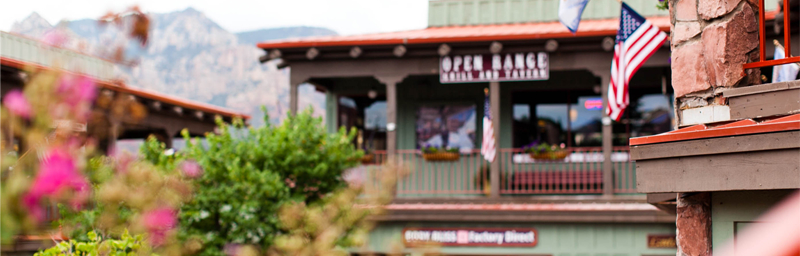
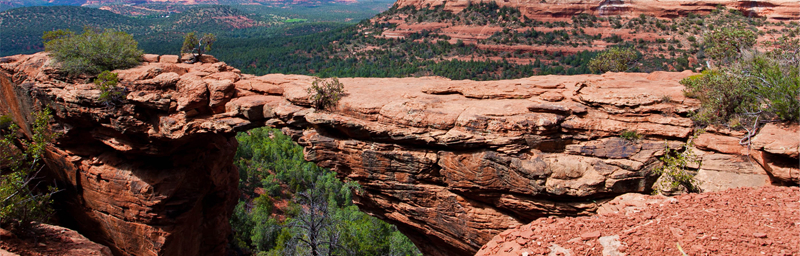

Sedona
Седона — небольшой городок в Аризоне, заслуживающий большего!
Рассмотрим 5 причин, по которым Седона круче, чем гранд каньон!
-
Настоящий городок
— №1 —
Седона — не аттракцион для туристов, там течёт своя жизнь
-
Жильё
Рекомендуем пожить в настоящем мотеле, всё как в кино!
-
Еда
Всегда заказывайте фирменный бургер, вы не разочаруетесь!
-
Сувениры
Не только китайского, но и местного производства!
-
-

Небольшая площадь
— №3 —
Все достопримечательности находятся очень близко
-
Красивая дорога
— №4 —
Ехать в седону из лас-вегаса совсем не скучно!
-
Мало туристов
— №5 —
Большинство едет в гранд каньон и толпится там
Заинтересовались?
Укажите предполагаемые даты поездки, и мы покажем вам лучшие предложения гостиниц в седоне